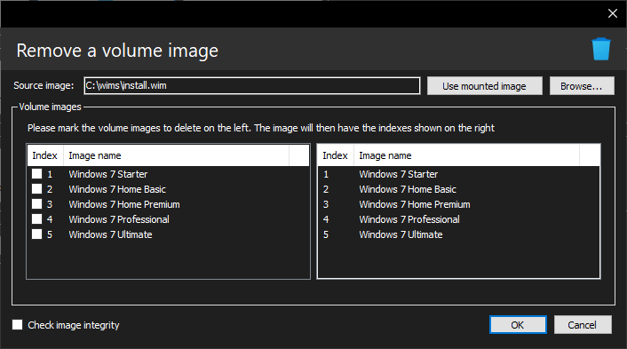

Removing volume images

With DISMTools you can easily remove indexes of a Windows image you don't need and focus on the ones you're interested.
Usage
- Specify the source image to remove volume images from. It must have more than 1 index. You can also use the mounted image if you have loaded a project with an image mounted
- Specify the indexes to remove on the list on the left side. When changing the selected items in this list, another list will be updated on the right side so that it contains the indexes that will remain
Do note that, if the image is mounted, it will be unmounted discarding changes, so make sure you have saved all your changes.
Options
- You can check the integrity of the image before proceeding
Remarks
While this streamlines the Windows image to only contain the indexes you want, it is not a way to reduce the image file in size. If you want to do that, consider exporting the image.